Ingénierie géotechnique, études de sol Loi Élan
- La solution à votre étude de sol -
GEOTECH SOLUTIONS est un bureau d’études géotechniques basé en Ardèche qui vous accompagne tout au long de vos projets.
Entreprise à taille humaine, jeune et dynamique, GEOTECH SOLUTIONS est à l’écoute de vos demandes. Nous vous conseillons et réalisons vos études de sol assurant la pérennité de votre ouvrage.
Nous effectuons les sondages g'eotechniques : pénétrométriques, pressiométriques, géologiques, etc.
SONDAGES GEOTECHNIQUES

Nous réalisonsles essais de laboratoire : granulométrie, Valeur au bleu, etc.
ESSAIS DE LABORATOIRE


Nous dimensionnons vos ouvrages géotechniques dans le respect de la norme NFP 94-500.

CALCUL DE FONDATIONS

Nous réalisons également les dimensionnement des filières d’assainissement non autonome (ANC) et les études d’hydrogéologie.
OUVRAGES D'ASSAINISSEMENT
Pour chaque mission, votre interlocuteur dédié établira un rapport géotechnique personnalisé et complet.
GEOTECH SOLUTIONS possède les compétences pour intervenir à tous les stades de la vie d’un ouvrage : Etudes préalables, conception, réalisation, suivi ou diagnostic. Suivez ce lien pour découvrir les différentes missions géotechniques.
Vous vendez un terrain?
Vous voulez construire votre maison individuelle?
GEOTECH SOLUTIONS réalise votre étude géotechnique (G1 PGC ou G2) avec fiabilité, réactivité et optimisation des coûts.
Rendez-vous sur la page dédiée pour tout savoir sur l’application de la Loi Élan .
Contactez-nous si vous avez besoin d’un devis ou de conseils.